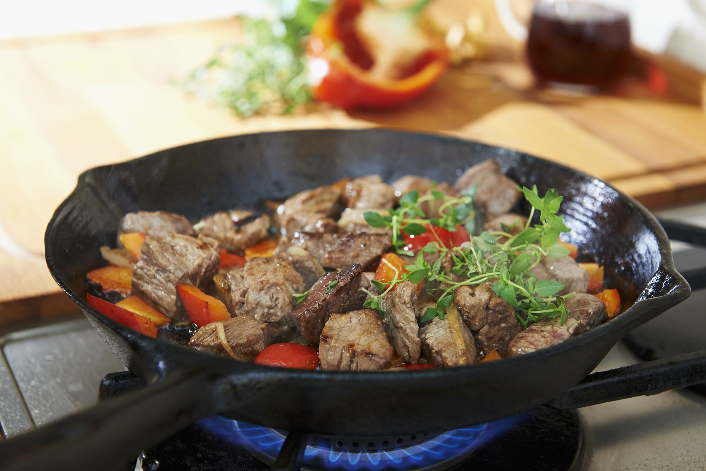
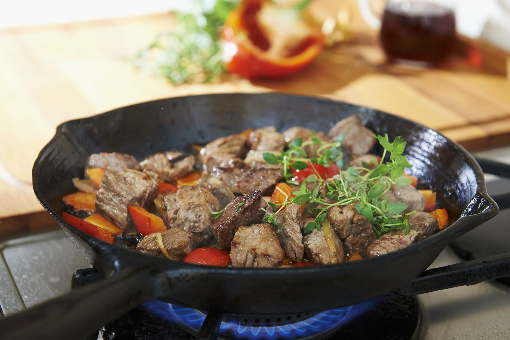

Cooking at home has a positive impact on our daily lives, health, and the environment. It allows us to nourish ourselves and our loved ones, brings people together over meals, and can help us maintain a balanced diet. By using sustainable cooking practices, we can reduce our environmental impact and contribute to a healthier lifestyle. It's also an outlet for creativity and it allows you to explore a wide variety of dishes from cultures around the world.
 


IMPACT
Health and cooking are closely linked, as the food we eat has a significant impact on our overall health and wellbeing. By choosing fresh foods and preparing them in healthy ways, we can provide our bodies with necessary nutrients. Cooking at home also allows us to control the ingredients and portion sizes, which can help us maintain a healthy weight and reduce our risk of chronic diseases such as heart disease, diabetes, and certain cancers. By choosing to cook at home and by making healthy cooking a priority, we can select ingredients and cooking methods to produce delicious and nourishing foods.


Health
Our diets and cooking practices can have a big influence on the environment. For instance, the manufacturing of meat and dairy products is a significant source of greenhouse gases, and food waste that decomposes in landfills also emits greenhouse gases. The energy needed to cook food can also have an impact on climate change, particularly if it originates from non-renewable sources. The environmental effect of cooking may be lessened in a variety of ways, though. For instance, we may lessen the carbon footprint associated with transportation by opting to cook using locally produced items. By carefully planning our meals, repurposing leftovers, and composting food scraps, we can also cut down on food waste. We can also reduce food waste by planning meals carefully, using leftovers creatively, and composting food scraps. Finally, we can choose cooking methods that are energy efficient, such as using a pressure cooker or slow cooker, or cooking multiple items in the same pot. By cooking at home, we can choose green ingredients and green methods of cooking, ultimately reducing carbon emissions and helping the environment.
Environment
Cooking at home can save you money in a number of ways. First and foremost, cooking your own meals is generally much cheaper than eating out or buying pre made meals. You can stretch your food budget by purchasing ingredients in bulk, choosing cheaper cuts of meat, and making use of leftovers. Additionally, cooking at home allows you to control the quality of the ingredients you use, which means you can choose high quality, healthy ingredients that might be too expensive to order in a restaurant. Finally, cooking at home can help you develop valuable skills that can be used throughout your life, such as meal planning, budgeting, and time management. By mastering these skills, you'll be able to save money not just on food, but on many other aspects of your life as well.
Costs
Cooking is an artistic activity that lets you express yourself in a special way. Cooking provides you the chance to experiment and try new things, whether you're using a recipe or improvising with the items you have on hand. It's an opportunity to experiment with new tastes, textures, and culinary methods while also establishing your own distinctive cooking style. Also, cooking may serve as a creative spark for other activities like writing or photography. Cooking may be a calming, stress-relieving hobby that will help you relax and clear your thoughts, which can free up your creativity.